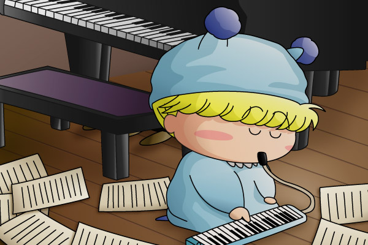

睦月梓さんよりリクエストいただきまして、「ピアニカミルモ」を描いてみました。2004年放送ドラマ『砂の器』のミルモバージョンです。過去の自分の生い立ちから逃れられない、そんな宿命に怯えながらも、自分の過去そのものであるこのピアニカを無心で吹くミルモ…。
ドラマはSMAPの中居君がピアニストの和賀を演じましたが、ミルモだとシリアスさが足りないですね（失礼＞ミルモ）。ただ、ピンチの場面でアクミを助けたり、リルムにたまに見せる暖かい想いを持ち合わせるミルモ、実はドラマの主人公向きなのかもしれません。今回の中居君役もミルモ以外にふさわしいと思える妖精は一人も思いつかなかったし(^^;。
今回、グランドピアノやピアニカを描くのにかなり苦労しました（家にピアノがないので、インターネットで調べました）。また、ミルモたち妖精の体型だとピアノのペダルまで足が絶対届かないので(笑)、微妙にピアノや椅子の高さを低くしてみました。
(2004/4/16)